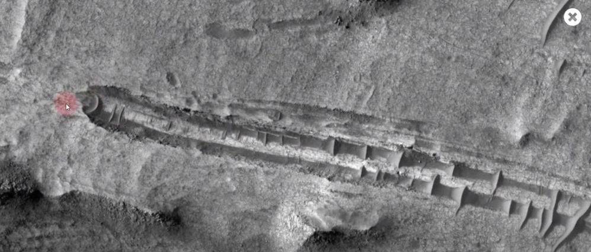
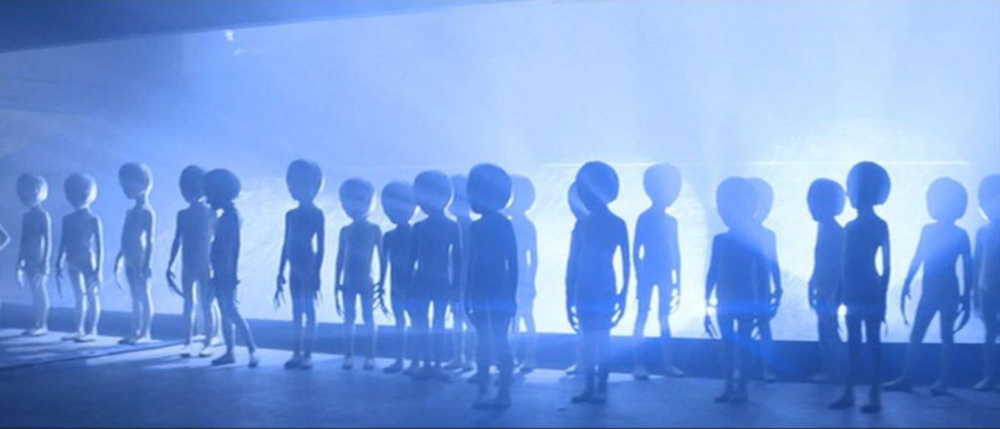
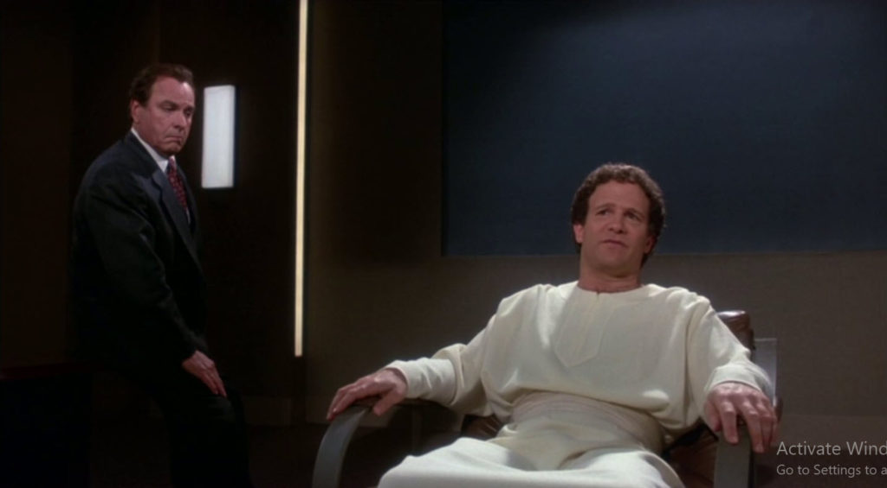
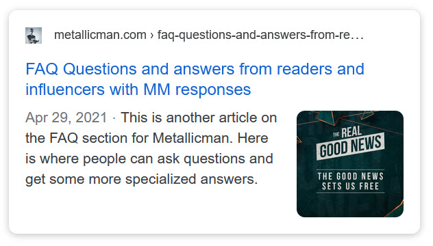

The Domain, the MWI and how reality works, in one place.
431 articles by Metallicman and his guest contributors on The Domain, the EBP communications with its Commander, extraterrestrial species, MAJestic, world-lines, intention campaigns, reincarnation and the prison planet. Organized by the author's own subject indexes, readable offline.

Start here
the four pages that explain everything elseThe Domain
The Sep 2021 message from The Domain via the EBP, the rescue mission for its lost battalion, and every Q&A session with the Commander since.

For New Visitors – Read This First
Prof77's orientation for new readers: what the blog is, how it is organized and how to approach it.

MAJestic Disclosure
The approved disclosure: what MAJestic is, the true reality, the agents, the others and what can be changed.

Terms and Conventions
The glossary. MWI, world-lines, EBP, MAJestic, Type-1, IS-BE and the rest of the author's vocabulary.
Collections
every subject index the author keeps for this materialMAJestic & extraterrestrials

MAJestic Related Index
The master index for everything MAJestic: training, our universe, our Earth, extraterrestrial life, species, world-line travel, intention.

Extraterrestrial Species
The four species the author claims first-hand knowledge of, plus mystery species and progenitors.

Type 1 Grey Extraterrestrials
The most common extraterrestrial race on the planet: brown dwarf systems, the hollow moon, Alien Interview, the trapped 3,000.
How reality works

World-Line Travel Index
Stories, observations and the mechanics of how world-lines work in a quantum universe.

Intention and Prayer Campaigns
The full course, class 101 to advanced studies, on affirmation campaigns that navigate the MWI.
DIY – Do It Yourself Dimensional Portal Construction and Techniques
The DIY dimensional portal series: hardware, frequencies and technique.

Gateway Techniques (Hemi-Sync & FFR)
Centering your consciousness with Hemi-Sync and FFR so intention campaigns work.

Heaven
The geography and topography of heaven, cat heaven and where souls go.
Past Life Regression Index
The author's past life regression and what came after Alien Interview.
Fate Forecasting
Chinese BaZi fate forecasting read as pre-birth world-line templates.
Quantum construction video series
The YouTube series in order: basics, affirmations, mantids, reincarnation, the Commander's guidance, world-line structure.
Mysteries & anomalies

John Titor Index
The 1998 time traveller's transcripts and what his narrative says about world-lines.

OOPART Related Index
Out-of-place artifacts and mysteries that break the conventional chronology.
Guest contributors

Daegonmagus
Guest contributor since July 2021: lucid dreaming, consciousness at death, simulation theory, remote viewing.
PissedLizard
Guest contributor since August 2021: first-hand experiences of the light and the non-physical.
Patreon & GitHub
ΨORM: the Ψ-Ontic Reality Model
The author's unified framework for consciousness, time and reality, published as a GitHub repository in 2026: seed document, 33 sections, bridges to other worldviews, glo

Patreon posts
Every post on the author's Patreon (285 posts, 2022 to 2026): titles, dates and thumbnails from the public listing, 31 public videos linked directly, 0 full bodies from a
About the source

Questions and Answers
Influencer questions to the author and his answers. Start here if you have questions about MM.

The Grey Web
What kind of site this is and who it is for: the white web, the dark web and the grey web.

About Me
Who Metallicman is: naval aviation, MAJestic, China, and why he writes.